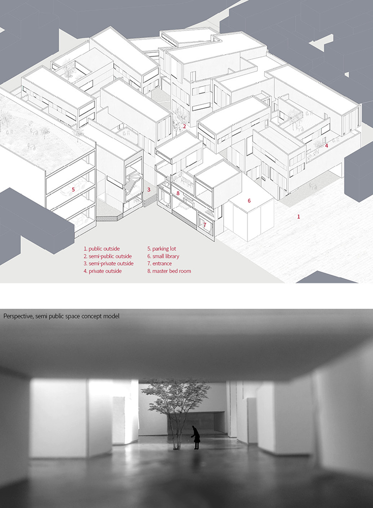

The project is to redevelop the area of Yimoon 1. The old urban structures has been developed far from the limitation of the architectural codes and regulations, showing traditional town structure on the mountain slope with modern residential buildings. Thus, it has a lot of dead ends, which plays a vital role of public space that neighbors get together. The proposal of the new development plan is to strengthen the space quality of the dead ends into various scale outside space. The length of the dead ends shows how many people are using the road, if one household use a dead end, it would be extremely private space. However, if three or five households shared a dead end, it would be little more public than the former. Converting linear dead ends into public outside space with variation is the key of this project. Also, new typology of the houses are suggested, following the newly established strategies of the masterplan. This typology also try to earn private outside space, detached from the ground level. This private space is the last and smallest part of the outside spaces with a hierarchy on the masterplan.
Dead End in Yimoon 1 area is used as public space, functioning as urban aisle for houses facing it. Naturally, People use this linear space for compensating shortage of outside space in their houses. They meet each other on this alley and greet each other. Children make their friends on there, by playing outside.
Extracting lines than goes to the dead ends from the map above is the initial step of this urban projects. The paths with dead ends mean some linear and the lowest hierarchieal public space, unknowned and invisible from outside of the area. Only the inhabitants knows the existence of these space. Developing this value of the space, newly development will be designed to provide more divergent public space in various scale. Converting this linear space into diverse public space is the key to renewal this city. Digital and computational methods are applied to make master plan in urban scale, following the process, mentioned below.
With new plan for urban outside space, the new housing typology is required to maximize the strategy of dead end's conversion. To response to many hierarchical outside space, the typology also consisted of various scale of outside space. Initially physical model test is the starting point to make in-between space with mass.
Organization rules and logics are found, and created by using Grasshopper in the ideal plan space. However, since Yimoon 1 area is nearly mountain side, another logic that applying the former rules to real world with terrain is required.
Different organization of mass means that different quality of space is and different structure system from ordinary housing is needed. Wall-Column and wall-beam systems are applied to make various outside spaces, like Jenga wood block.
